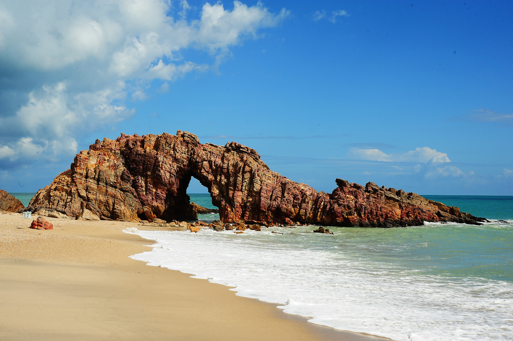

Beachs of Brazil
O Brasil é um dos países tropicais conhecidos pelas praias mais bonitas do planeta. Confira as melhores praias para este verão.
Jericoacoara

Jericoacoara é uma praia localizada na vila homônima, no município de Jijoca de Jericoacoara, no estado do Ceará, no Brasil. Está localizada a 295 km a oeste da capital do estado, Fortaleza. Foi eleita em 1994 pelo jornal estadunidense The Washington Post uma das dez praias mais bonitas do planeta. Em 2014, foi eleita pelo Huffington Post a quarta melhor praia da Terra.É um dos locais mais frequentados por praticantes de windsurfe no país. A praia é parte integrante do Parque Nacional de Jericoacoara.
Atrações:
- Pedra Furada.
- Duna do Pôr do Sol.
- Igreja Nossa Senhora da Consolação.
- Serrote.
- Farol de Jericoacoara.
- Campo das Dunas.
Outras Praias Populares
Praia Grande

A Praia Grande, localizada no litoral de São Paulo, é um destino popular conhecido por suas extensas faixas de areia e águas claras. Com uma infraestrutura bem desenvolvida, a cidade oferece uma variedade de opções de lazer. Além das belas praias, os visitantes podem desfrutar de atrações culturais, como o Festival de Verão e eventos de música. A cidade também conta com uma rica fauna e flora nas áreas de preservação ambiental, tornando-se um excelente local para famílias e jovens. Com fácil acesso a São Paulo, Praia Grande é ideal para quem busca relaxar e se divertir em um ambiente vibrante e acolhedor.
Atrações e Praticas No local e Região :
- Quiosques.
- Restaurantes.
- Esportes.
- Festival de Verão.
- Eventos de Musica.
- Fauna Rica e flora.
- Grandes Áreas de Preservação Ambiental.
Ilha Bela

Ilhabela, localizada no litoral norte de São Paulo, é um paraíso natural conhecido por suas praias deslumbrantes e rica biodiversidade. Com mais de 40 praias, como Praia do Curral e Praia da Feiticeira, a ilha oferece opções para todos os gostos, desde relaxamento até esportes aquáticos.
Atrações e Praticas no local :
- Centro Histórico e suas construções coloniais.
- Igreja de Nossa Senhora da Ajuda.
- Festa de lemanjá.
- Festival do Camarão.
- Trilhas e Cachoeiras.
- Calendario eventual.
- Festival Internacional de Música.
- Circuito de Ilha de Vela Local onde possui muita cultura e natureza.
Praia Maresias

Maresias, localizada no município de São Sebastião, é uma das praias mais famosas do litoral norte de São Paulo. Conhecida por suas ondas perfeitas, é um hotspot para surfistas e amantes de esportes aquáticos. A praia conta com uma areia clara e fina, cercada por uma vegetação exuberante.
Atrações :
- Vida noturna com bares.
- Restaurantes beira-mar.
- Festival de surf.
- Musicas ao vivo.
- Trilhas Que Levam a Cachoeira.
- Passeios de barco.
- Atmosfera de Otimo Agrado.
- Belezas Naturais.
- Diversão e Relaxamento.
Praia de Pipa

Praia de Pipa, localizada no Rio Grande do Norte, é um destino encantador conhecido por suas falésias coloridas, águas mornas e areias brancas. É famosa pela sua beleza natural e pela atmosfera descontraída, atraindo surfistas, famílias e turistas em busca de aventura.
Atrações da Praia de Pipa no Rio Grande Do Norte :
- Praia do Amor em seu formato de Coração.
- Praia das Minas, famosa para a Observação dos Golfinhos.
- Vila de Pipa Oferece Uma Rica vida Noturna.
- Bares e Restaurantes locais.
- Pratos servidos no local.
- Eventos culturais.
- Festival de Inverno de Pipa.
- Feira de Artesanato.
- Calendario na Região.
- Combinação da Natureza exuberante e uma cultura vibrante. Uma cultura imperdível no Brazil.
Cuidados no Verão
Todos nós queremos curtir as férias de verão da melhor forma possível. Fique ligado e siga as dicas a seguir.
- Use protetor solar com fator de proteção adequado (FPS 30 ou mais) e reaplique a cada 2 horas, especialmente após entrar na água. A exposição prolongada ao sol pode causar queimaduras, envelhecimento precoce e aumentar o risco de câncer de pele.
- Beba bastante água para manter-se hidratado, já que o calor intenso pode levar à desidratação. Evite consumir apenas bebidas alcoólicas, pois elas podem acelerar a desidratação .
- Algumas praias possuem correntes fortes que podem arrastar nadadores para o mar aberto. Fique atento às bandeiras de sinalização e sempre nade em áreas supervisionadas por salva-vidas.
- Evite o sol entre 10h e 16h,quando os raios ultravioleta (UV) são mais intensos. Se estiver na praia nesse período, sombra e use acessórios de proteção, como chapéus, óculos escuros e roupas leves.
- Coma alimentos leves e frescos. Evite comidas de origem duvidosa ou mal conservadas, pois o calor pode acelerar a deterioração e causar intoxicações alimentares.
Esses cuidados garantem maior segurança e conforto durante os dias de praia no verão.
Cuidados com as Crianças
Levar as crianças para a praia no verão é uma ótima maneira de aproveitar o sol e o mar, mas é importante seguir alguns cuidados para garantir a segurança e o bem-estar dos pequenos:
- Garantir que seu pequeno está hidratado e protegido contra os raios de (UV).
- Passar protetor solar com proteção (UV) em sua composição e se preferivel com solução hidratante.
- Não deixa-los totalmente exposto ao sol, após as 12:00 Horas, pois dai em diante o sol esta na sua maior atividade e isso poderá causar mal estar e até problemas de pele.
- Sucos naturais e água fresca com frequência é uma otima escolha.
Pacotes de Viagens
Abaixo traremos a você sugestões de principais empresas para comprar seu pacote de viage,.Lembre-se verifique antes a reputação da empresa, não nos responsabilizamos por golpes.
Em geral tentamos agir com total transparência e comprometimento em nossas ações.
Reserve agora, sua viagem com antecedência e economize.
Agradecemos por nos escolher e podermos fazer parte da economia do seu tempo e dinheiro e claro sua viagem, adoramos ser a preferência que você escolhe!
Clique nos ícones e confira as promoções
Criadores do site
Este site foi desenvolvido por alunos do curso de Desenvolvimento JS do SENAISP. Abaixo está a localização de uma de nossas unidades na qual foi produzido o site.